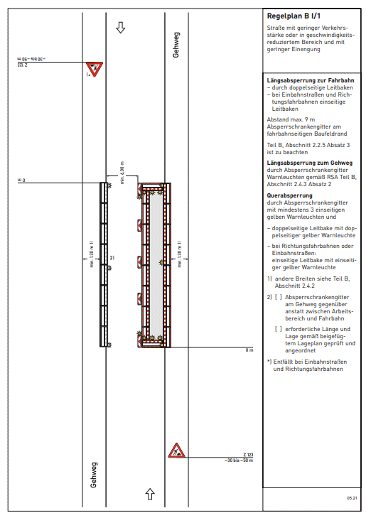

Verkehrszeichenplan
- Bei der Erstellung des Verkehrszeichenplans werden erforderliche Platzbedarfe für Arbeitsplätze, Verkehrswege, Sicherheitsabstände und technische Schutzmaßnahmen gemäß ASR A5.2 berücksichtigt
- Im Verkehrszeichenplan sind
Lage, Art und Abstände der aufzustellenden Verkehrszeichen
eingezeichnet
- Der Verkehrszeichenplan muss
genehmigt werden
- Der Verkehrszeichenplan ist
dem Antrag des Bauunternehmers beizufügen
Vorlagen für den Verkehrszeichenplan finden sich in den
"Richtlinien zur verkehrsrechtlichen Sicherung von Arbeitsstellen an Straßen"(RSA)
Bei umfangreichen Sperrmaßnahmen berät die Straßenverkehrsbehörde
